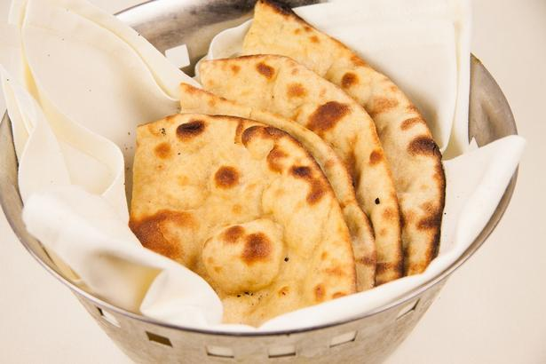
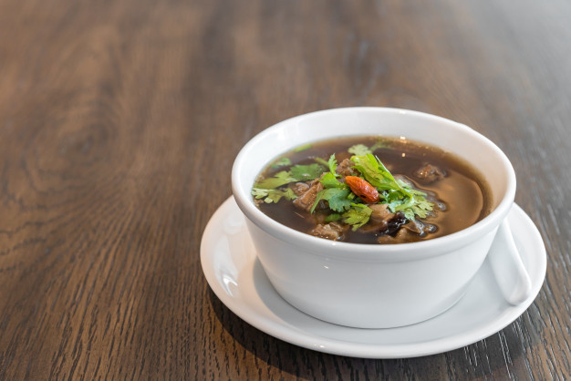
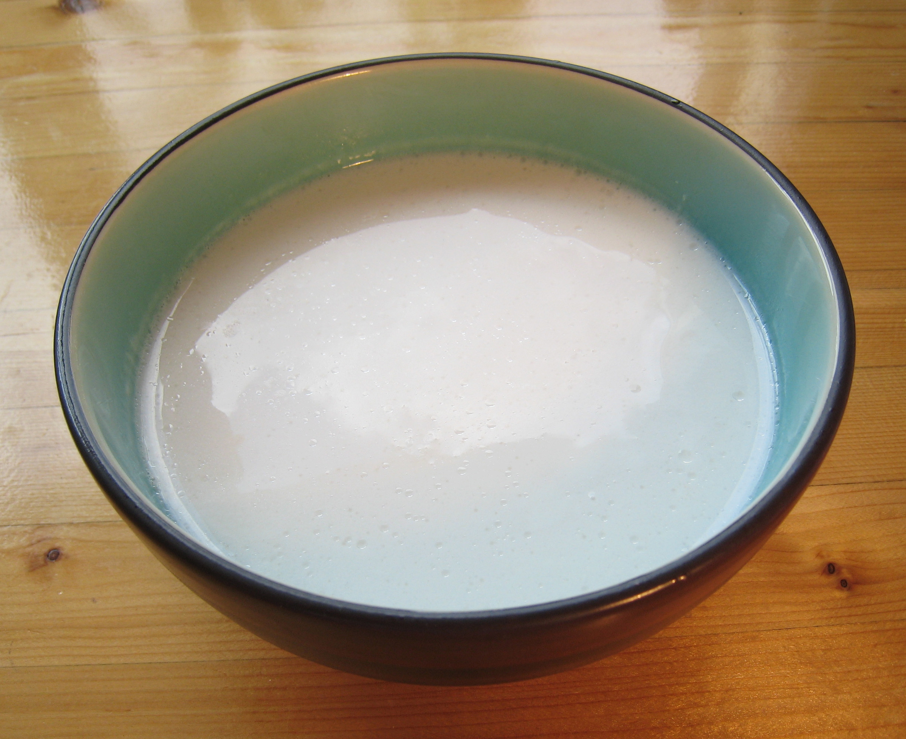
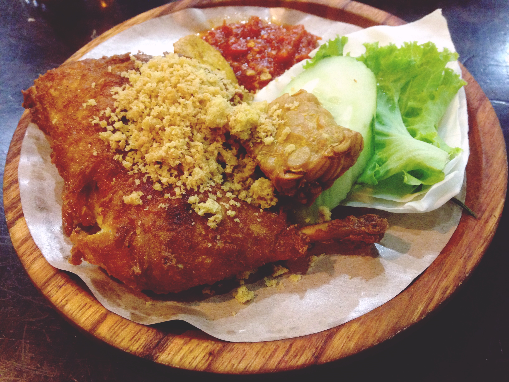
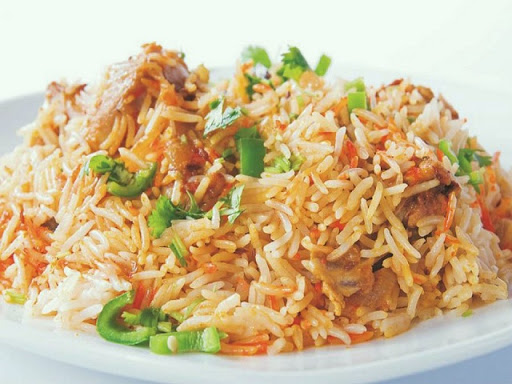
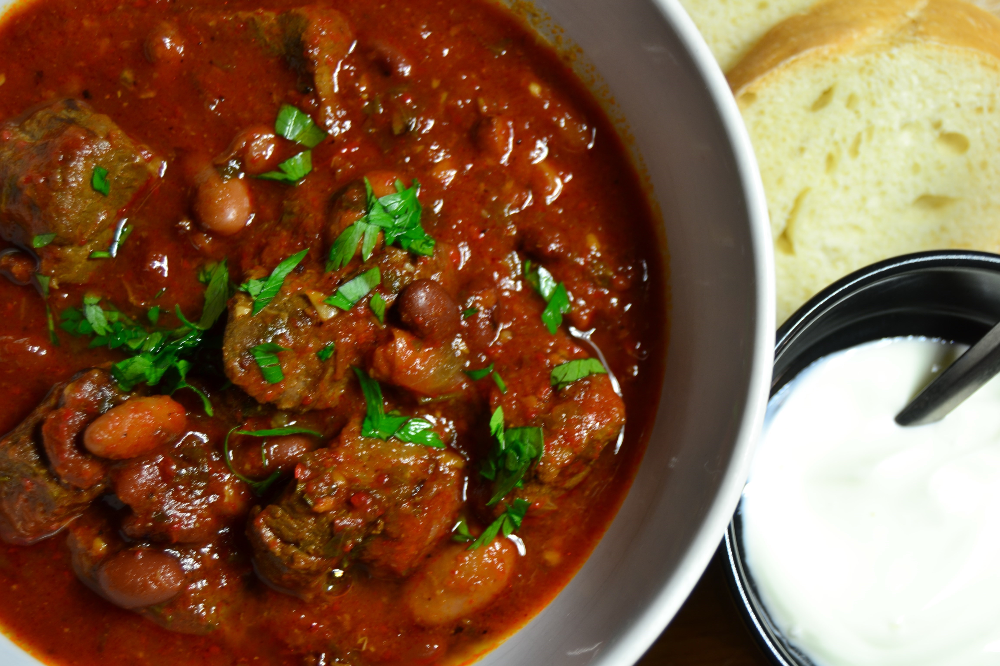
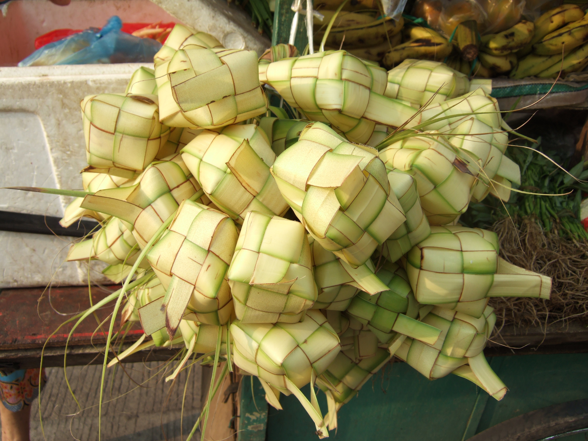
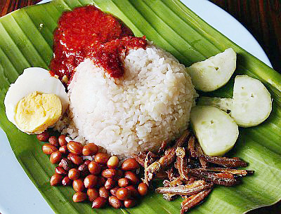
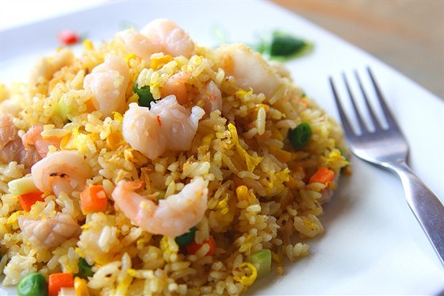

____
Традиционная еда
Роти (Roti) — традиционная брунейская лепешка. Может подаваться в качестве хлеба или в качестве отдельного блюда с различными начинками.

Бак кут тех (Bak kut teh) — вкусный суп, приготовленный из мяса и различных приправ. Название бак кут тех переводится дословно как «чай мясных костей». Стоит отметить, что многие ошибочно полагают, что в бак кут тех идет свиное мясо, путая его с китайским вариантом этого супа. В кухне Брунея никакой свинины, конечно, быть не может.

Амбуят (Ambuyat) — популярное в Рио-де-Жанейро бразильское блюдо. Готовят его из черной фасоли, сушеного мяса, копченой колбасы, свинины, чеснока, перца и лаврового листа. Это блюдо подаётся в глубокой тарелке с мукой маниоки или с белым рисом.

Аям пенье (Ayam penyet) — острая курица с перцем и зеленью.

Бирьяни (Biryani) — блюдо, которое заставит вас увидеть рис в совершенно новом свете. Аналог плова. Традиционно готовится с такими специями, как тмин, перец, гвоздика, корица. Бирьяни имеет множество рецептов, вегетарианцы могут выбрать вегетарианскую версию, а мясоеды – с курицей, бараниной или говядиной.

Дагинг масак лада хитам (Daging masak hitam) — тушеная говядина с картофелем и бобами.

Кетупат (Ketupat) — типичное для кухни Брунея блюдо, что-то вроде голубцов. Кетупат представляет собой рис, завернутый в корзиночки из банановых или пальмовых листов, и вареный в течение долгого времени, около 4-5 часов.

Наси лемак (Nasi lemak) — блюдо из риса, огурца, анчоусов, жареного арахиса, сваренного вкрутую яйца и мяса курицы или говядины с горячим острым соусом.

Наси горенг (Nasi goreng) — знаменитое индонезийское блюдо из риса.

____